Chap3 translated
3 Reliability, Availability, and Serviceability (RAS)
3 可靠性、可用性与可服务性 (RAS)
3.1 RAS Requirements
Accelerator Pods require a robust fault management system to identify hardware failures and restore normal operations after errors with minimal disruption. This specification defines the Reliability, Availability and Serviceability requirements for Accelerators and Switches that use Ultra Accelerator Link technology.
加速器Pod需要强大的故障管理系统来识别硬件故障，并在出错后以最小中断恢复正常运行。本规范定义了使用超加速器链路（Ultra Accelerator Link）技术的加速器和交换机的可靠性、可用性和可维护性要求。
This specification considers three broad classes of errors,
本规范考虑了三大类错误，
- Accelerator errors
- 加速器错误
- Link Down errors
- 链路中断错误
- Switch errors.
- 交换机错误。
and a set of RAS requirements and assumptions:
以及一系列 RAS 要求和假设：
- A System Node is recommended as the smallest unit of allocation for a Virtual Pod. This recommendation is for simplicity, but implementations may vary. An Accelerator shall be the smallest allowable unit of allocation for a Virtual Pod.
- 建议将系统节点作为虚拟 Pod 分配的最小单元，这是出于简单性考虑，但具体实现可能有所不同。加速器应是虚拟 Pod 允许分配的最小单元。
- System Node errors (an error in one of the components in a System Node, e.g. CPU, GPU, PCIe, and other components) should not 'spread' beyond a virtual pod, however in the case where a System Node spans more than one Virtual Pod, the error may spread to all Virtual Pods associated with the System Node.
- 系统节点错误（系统节点中某一组件发生的错误，例如 CPU、GPU、PCIe 及其他组件）不应“传播”到虚拟 Pod 之外，然而，当系统节点跨越多个虚拟 Pod 时，该错误可能传播到与该系统节点关联的所有虚拟 Pod。
- Link Down errors shall not 'spread' beyond a Virtual Pod.
- 链路断开错误不得“扩散”到虚拟 Pod 之外。
- An Accelerator attempts to handle Link Down errors and Switch errors without requiring a reboot of the associated System Node(s), Accelerator(s), or the associated Switch.
- 加速器尝试处理链路断开错误和交换机错误，而无需重启关联的系统节点、加速器或关联的交换机。
- Switches shall be stateless (i.e., Switches do not track Requests nor Responses once sent) and shall not be expected to implement any timeout detection. Accelerators shall implement timers, and timeout detection.
- 交换机应为无状态的（即，交换机一旦发送请求或响应后便不再对其进行跟踪），且不要求其实现任何超时检测。加速器应实现定时器及超时检测。
- Since UALink is a network that uses load-store operations (memory-semantic operations), it shall be acceptable for applications to be terminated and restarted when there is a Link Down error, a Switch error or an Accelerator error.
- 由于 UALink 是一个使用加载-存储操作（内存语义操作）的网络，当发生链路断开错误、交换机错误或加速器错误时，应允许终止应用程序并重新启动。
- UALink Data payloads shall be protected with parity or ECC and shall detect data errors that are uncorrectable. On such a detection, that data shall be marked as "poisoned".
- UALink 数据有效载荷应使用奇偶校验或纠错码（ECC）进行保护，并应检测出无法纠正的数据错误。一旦检测到此类错误，该数据应被标记为“已损坏”。
- The UALink control path shall be protected and errors shall be isolated to a given port where required (such as Link Down errors - to avoid propagating an error outside the virtual Pod), but are otherwise handled at a coarser grain (i.e. at a given station or possibly all links on a Switch or an Accelerator).
- UALink 控制路径应受到保护，在需要时（例如链路断开错误——以避免将错误传播到虚拟 Pod 外部）应将错误隔离到给定端口，但其他情况下则以更粗的粒度处理（即，针对给定站点，或可能交换机或加速器上的所有链路）。
- Component errors on a Switch Platform which may contain one or more Switches, CPU, FPGA, etc., may impact all the Switches in the Switch Platform and require a reset of the Switch Platform. However, Accelerators and other Switches in the Pod shall be able to recover/restart and continue to operate.
- 交换机平台上的组件错误（可能包含一个或多个交换机、CPU、FPGA等）可能会影响交换机平台中的所有交换机，并要求重置交换机平台。然而，Pod中的加速器和其他交换机应能恢复/重启并继续运行。
- The recovery process from a RAS error shall be controlled by fault management software and firmware running on BMC and host processors. Details of the fault management software may be found in the separate Ultra Accelerator Link Manageability Specification.
- 从 RAS 错误恢复的过程应由运行在 BMC 和主机处理器上的故障管理软件及固件控制。故障管理软件的详细信息可见于单独的《超加速器链路可管理性规范》。
This specification attempts to simplify the hardware requirements for Switches while placing more responsibility for RAS error handling on Accelerators.
本规范试图简化交换机的硬件要求，同时将更多的RAS错误处理责任交给加速器。
3.1.1 End to End Data Protection
End to End protection of control and data buses shall be provided in UALink from a Source Accelerator to the Destination Accelerator. The protection mechanisms used by various components along this path does not need to be the same. However, an explicit overlap on the protection mechanisms at abutment points between components where the protection mechanism changes shall be required. In other words, the protection mechanism in a prior component along the path shall continue to be checked until the protection mechanism in the subsequent component is established without error on the prior component. This is conceptually shown in Figure 3-1.
在 UALink 中，从源加速器到目标加速器应为控制总线和数据总线提供端到端保护。沿此路径不同组件所使用的保护机制不必相同。但是，在保护机制发生变更的组件之间的衔接点处，应要求保护机制有明确的重叠。换句话说，路径上前一组件的保护机制应持续进行检查，直到后一组件中的保护机制在前一组件上无误地建立。其概念如图 3-1 所示。
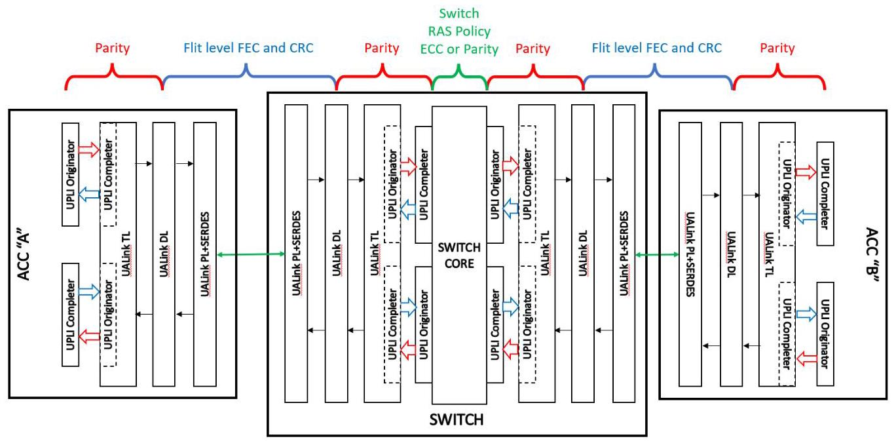
Figure 3-1 UALink End to End Data Protection
图3-1 UALink端到端数据保护
The UALink Protocol Level Interfaces shall be protected by even parity bits (the number of set bits in a protected group including the parity bit itself is even). Each channel within a UALink Protocol Level Interface shall have a separate set of parity signals for the individual channel. Each channel that has a Vld signal shall protect the Vld signal with a single parity bit. These parity bits shall be checked every cycle to detect extraneous or missing *Vld assertions.
UALink 协议层接口应采用偶校验位进行保护（受保护分组中置位的比特数，包含校验位自身在内，须为偶数）。UALink 协议层接口内的每个通道均应拥有各自独立的校验信号组。对于带有 Vld 信号的通道，均应使用单个校验位来保护该 Vld 信号。上述校验位须每个周期均进行检查，以检测出多余或缺失的 *Vld 置位。
All other parity bits in the channel (not including the Credit Return Interface) shall be checked in cycles where *Vld is asserted. For channels with data or byte enables, those fields (OrigData OrigDataByteEn, RdRspData) shall be protected with distinct parity bits to allow for the detecti data errors and poisoning of Beats by setting RdRspDataError or OrigDataError fields in the respective channels.
信道中所有其他奇偶校验位（不包括信用返回接口）均应在置位 *Vld 的周期内进行检查。对于具有数据或字节使能的信道，这些字段（OrigData、OrigDataByteEn、RdRspData）应使用不同的奇偶校验位加以保护，以便能检测数据错误，并通过在相应信道中设置 RdRspDataError 或 OrigDataError 字段来对数据拍进行中毒标记。
Each channel shall have one parity bit for the control information, except the Request Channel which shall have a separate bit for the Request address and one parity bit for the other control fields.
每个通道应具有一个用于控制信息的奇偶校验位，但请求通道除外，请求通道应具有一个用于请求地址的独立位和一个用于其他控制字段的奇偶校验位。
Each channel shall have a Credit Return Interface consisting of four CreditVld bits and some control fields. The CreditVld bits shall be protected by a single CreditVldParity signal that shall be checked every cycle to detect extraneous and missing CreditVld assertions. The control fields in the Credit Return Interface shall have a single parity bit that shall be checked in cycles that *CreditVld is asserted.
每个通道应配备一个信用返回接口，该接口由四个CreditVld位及若干控制字段组成。CreditVld位应由单一的CreditVldParity信号进行保护，需每周期校验该信号，以检测多余的或缺失的CreditVld置位。信用返回接口中的控制字段应设有单一校验位，并在*CreditVld置位的周期内进行校验。
Ultra Accelerator Link Consortium Inc. (UALink) - UALink_200 Rev 1.0 Specification
Ultra Accelerator Link Consortium Inc. (UALink) – UALink_200 修订版 1.0 规范
The DL and PHY layers shall protect DL and TL Flits through FEC (Forward Error Correction) and CRC (Cyclic Redundancy Checks). The UALink Protocol Level Interfaces shall be protected by Parity. However, within the Switch Core, a distinct Error Protection mechanism (possibly utilizing ECC) may be used. If the Switch Core error protection scheme is unable to distinguish between errors involving the data and control fields, the error shall be assumed to have occurred in a control field.
DL 层和 PHY 层应通过 FEC（前向纠错）和 CRC（循环冗余校验）来保护 DL 和 TL Flit。UALink 协议层接口应由奇偶校验保护。然而，在交换核心内部，可能会使用不同的错误保护机制（可能采用 ECC）。如果交换核心的错误保护方案无法区分涉及数据字段和控制字段的错误，则应假定错误发生在控制字段中。
3.1.2 RAS Error Types
UALink RAS errors are divided into several categories:
UALink RAS错误分为几类：
- UPLI Control Errors
- UPLI 控制错误
- UPLI Data Errors
- UPLI 数据错误
- UPLI Protocol Errors
- UPLI协议错误
- Switch Core Control Errors
- 交换机核心控制错误
- Switch Core Data Errors
本文档规定了加速器与交换机之间的超级加速器链路(UALink)互连的可靠性、可用性和可服务性(RAS)架构。主要研究问题是如何在负载-存储网络环境中识别硬件故障，并以最小中断恢复正常运行。
关键论点和方法侧重于将错误分为三类：加速器错误、链路断开错误和交换机错误。该规范强调将更多RAS职责放在加速器上，同时简化交换机硬件需求。一个关键设计原则是在虚拟Pod内进行错误隔离，以防止故障在系统中传播。
文档介绍了三种主要的错误处理机制：TL丢弃模式（在交换机和加速器的传输层实现）、发起方/完成方丢弃模式（在传输层之外的加速器接口）以及隔离模式（仅在加速器发起方）。端到端数据保护沿路径使用不同的机制（奇偶校验、FEC、CRC、ECC），并在组件边界明确重叠。错误被分类为UPLI控制、数据、协议、交换机核心控制、交换机核心数据及链路断开等类型。
主要结论确定，链路断开错误可在不重置加速器或交换机的情况下恢复，且不得影响其他虚拟Pod。控制错误通常需要更广泛的隔离（所有端口或整个站点），而数据错误通过破坏性标记受影响的节拍并将其转发至目的地来处理。该规范还定义了UPLI接口重置，以及使用ClkReq/ClkAck信号的连接握手协议，以防止初始化期间的竞争条件。
-
交换机核心数据错误
-
Link Down Error.
- Link Down 错误。
The UALink Protocol Level Interface errors (Control, Data, Protocol) shall be defined as errors that occur at the UALink Protocol Level Interfaces on the Accelerators or on the UALink Protocol Level Interfaces on a Switch. The Link Down error shall be defined as the error that occurs when a UALink Link is disconnected or takes some other failure that renders it inoperable.
UALink 协议层接口错误（控制、数据、协议）应定义为发生在加速器上的 UALink 协议层接口或交换机上的 UALink 协议层接口的错误。链路断开错误应定义为当 UALink 链路断开或发生其他导致其无法运行的故障时出现的错误。
A UPLI Control Error shall be defined as a parity error involving the ReqVldParity, RdRspVldParity, WrRspVldParity, or OrigDataVldParity signals (i.e. the parity check signals for the one bit Vld signal in each channel), a parity error involving the ReqParity, ReqAddrParity, RdRspParity, WrRspParity, or OrigDataFieldsParity signals (i.e. the parity check signals for the "control" information in each channel), a parity error involving the ReqCreditVldParity, RdRspCreditVldParity, WrRspCreditVldParity, OrigDataCreditVldParity signals (i.e. the parity check signals for the four bit CreditVld signals), or a parity error involving the ReqCreditParity, RdRspCreditParity, WrRspCreditParity, OrigDataCreditParity signals (i.e. the parity check signals for the "information" fields in the Credit return interface).
UPLI 控制错误应定义为涉及以下信号的奇偶校验错误：ReqVldParity、RdRspVldParity、WrRspVldParity 或 OrigDataVldParity（即各通道中 1 位 Vld 信号的奇偶校验信号）；涉及 ReqParity、ReqAddrParity、RdRspParity、WrRspParity 或 OrigDataFieldsParity 信号的奇偶校验错误（即各通道中“控制”信息的奇偶校验信号）；涉及 ReqCreditVldParity、RdRspCreditVldParity、WrRspCreditVldParity、OrigDataCreditVldParity 信号的奇偶校验错误（即 4 位 CreditVld 信号的奇偶校验信号）；或涉及 ReqCreditParity、RdRspCreditParity、WrRspCreditParity、OrigDataCreditParity 信号的奇偶校验错误（即信用返回接口中“信息”字段的奇偶校验信号）。
A UPLI Data Error shall be defined as a parity error involving the OrigDataParity, OrigDataByteEnParity, RdRspDataParity signals (i.e. the parity bits protecting the Read Response Channel data field, the Originator Data Channel data field, or the byte enables for the Originator Data Channel).
UPLI 数据错误应定义为涉及 OrigDataParity、OrigDataByteEnParity、RdRspDataParity 信号的奇偶校验错误（即保护读响应通道数据字段、发起者数据通道数据字段或发起者数据通道字节使能的奇偶校验位）。
A UPLI Protocol Error shall be defined as an error where the UPLI protocol is not followed and no UPLI Interface Control or UPLI Data Error occurs. As an example, a Request Channel Beat with a ReqAddr and ReqLen field that calls for a transaction that crosses a 256-byte boundary is a UPLI Protocol Error. Many other possible UPLI Protocol Errors exist and the Switch is shall not be required to check for any given protocol error.
UPLI 协议错误应定义为 UPLI 协议未被遵循、且未发生 UPLI 接口控制错误或 UPLI 数据错误的情形。例如，一个包含 ReqAddr 和 ReqLen 字段、要求事务跨越 256 字节边界的请求通道节拍即属于 UPLI 协议错误。可能存在许多其他类型的 UPLI 协议错误，交换机不应被要求检查任何特定的协议错误。
UPLI errors (Control/Data/Protocol) shall be checked at the receiving end of a given UPLI Channel.
在给定 UPLI 通道的接收端，应检查 UPLI 错误（控制/数据/协议）。
A Switch Core Control error shall be defined as an error occurring on control fields in a beat or beats or an error occurring on the data fields (OrigData, RdRspData, OrigDataByteEn) when the Switch error protection mechanism cannot isolate that error to the data fields (e.g. an error on a data field where a Switch ECC protection scheme that mixes data and control fields in a way that an error in the data field is indistinguishable from an error in a control field).
交换机核心控制错误应定义为发生在一个或多个拍的控制字段上的错误，或者当交换机错误保护机制无法将该错误隔离至数据字段时，发生在数据字段（OrigData、RdRspData、OrigDataByteEn）上的错误（例如，发生在数据字段上的一个错误，由于交换机的ECC保护方案将数据字段和控制字段混合在一起，导致数据字段中的错误与控制字段中的错误无法区分）。
A Switch Core Data error shall be defined as an error occurring on data fields that the Switch can isolate to the data fields (OrigData, RdRspData, OrigDataByteEn) in one or more Beats.
交换核心数据错误应定义为发生在数据字段上的错误，交换核心能够将该错误隔离到一个或多个拍中的数据字段（OrigData、RdRspData、OrigDataByteEn）。
3.1.3 RAS Error Handling Mechanisms
There are three primary RAS error handling mechanisms:
存在三种主要的 RAS 错误处理机制：
- A TL Drop Mode implemented at the TL's on both the Switch and the Accelerator.
- 在交换机和加速器的传输层（TL）上实现的 TL 丢弃模式。
- An Originator Drop Mode implemented at the UPLI Originators and a Completer Drop Mode implemented at the UPLI Completers in the Accelerator and UPLI Completers in the Switch that are not in the TLs.
- 在 UPLI 发起方实现的发起方丢弃模式，以及在加速器中不在传输层内的 UPLI 完成方和交换机中不在传输层内的 UPLI 完成方实现的完成方丢弃模式。
- An Isolation Mode implemented only at the UPLI Originators in the Accelerators.
- 一种仅在加速器中的 UPLI 发起者处实现的隔离模式。
Generally speaking, any Drop Mode not in the TL shall cause all traffic for all channels for all ports at the Originator or Completer to be dropped (implementations may choose to limit drop mode to the Channel with the error and/or the port with the error). Drop mode for the TL shall cause all traffic on all channels for either a given port or all ports at both the Completer and the Originator in the TL to be dropped. Whether all ports are dropped or a single port is dropped shall depend on whether the error is a Control Error (generally all ports, but an implementation may choose to only drop the affected port) or a Link Down Error (single port).
一般而言，任何不在 TL 中的丢弃模式都应导致发起者或完成者处所有端口的所有通道的所有流量被丢弃（实现可以选择将丢弃模式限制在出错的通道和/或出错的端口）。TL 中的丢弃模式应导致 TL 中完成者和发起者处给定端口或所有端口的所有通道上的所有流量被丢弃。丢弃所有端口还是仅丢弃单个端口，取决于错误是控制错误（通常为所有端口，但实现可以选择仅丢弃受影响的端口）还是链路断开错误（单个端口）。
Isolation Mode shall be a distinct mechanism from Drop Mode that shall be implemented only at the UPLI Originator in the Accelerators. These UPLI Originators shall be stateful and maintain a history of all the Requests that have been issued by the Originator or that are queued to be issued. This state shall be maintained until the Request has received all Response Beats associated with the Request. Within this state, each Request shall be expected to have a Watch Dog Timer that monitors the amount of time the Request has been outstanding.
隔离模式应是一种与丢弃模式不同的独特机制，仅在加速器中的UPLI发起器上实现。这些UPLI发起器应是有状态的，并维护发起器已发出或已排队待发出的所有请求的历史记录。该状态应一直保持，直到请求收到与该请求关联的所有响应Beat。在此状态内，每个请求都应配有一个看门狗定时器，用于监控请求的未完成时长。
When a programmable time limit is reached, the Watch Dog Timer expires and shall cause the UPLI Originator to enter Isolation Mode. Isolation Mode shall block all outbound Request and Originator data traffic for all ports in the Originator and shall discard any inbound Response or Request traffic. In addition, the Originator shall provide "dummy" Completion Timeout Responses for all outstanding Requests. Because the "dummy" Completion Time Out Responses will quickly lead to the termination of processing on the Accelerator, there is no meaningful advantage to perform Isolation Mode to anything less than all ports in the station.
当可编程时间限制达到时，看门狗定时器将超时并导致UPLI发起者进入隔离模式。隔离模式应阻止发起者中所有端口的出站请求与发起者数据流量，并丢弃任何入站响应或请求流量。此外，发起者应为所有未完成的请求提供“虚拟”完成超时响应。由于这些“虚拟”完成超时响应将迅速导致加速器上的处理终止，因此将隔离模式应用于站点内少于全部端口的情形并无实质优势。
Isolation Mode and Drop Mode at the UPLI Originator on the Accelerator shall be distinct mechanisms though both modes do drop traffic. The UPLI Originator on the Accelerator can be in neither mode, either mode, or both modes.
加速器上UPLI发起者的隔离模式和丢弃模式应是不同的机制，尽管两种模式都会丢弃流量。加速器上的UPLI发起者可以不处于任何模式、处于任一模式，或同时处于两种模式。
The following actions occur in Isolation Mode:
以下操作发生在隔离模式下：
- The UPLI Originator shall stop issuing new Requests to the TL (either outstanding Requests in the UPLI Originator or newly arriving Requests at the UPLI Originator) for all ports.
- UPLI 发起方应停止向 TL（传输层）发出所有端口的新请求（无论是 UPLI 发起方中尚未完成的请求，还是新到达 UPLI 发起方的请求）。
- The UPLI Originator shall provide "dummy" Completion Timeout Responses to all outstanding or newly arriving Requests for all ports in the Originator.
- UPLI发起方应为其所有端口上所有未完成或新到达的请求提供“虚拟”完成超时响应。
- The UPLI Originator shall discard any Responses, for all ports, received from the UALink TL (the "dummy" Completion Timeout Responses replace the Responses from the Completers).
- UPLI 发起方应丢弃所有端口上从 UALink 传输层接收到的任何响应（“虚拟”完成超时响应取代来自完成方的响应）。
- The UPLI Originator shall continue to accept returned Credits and shall return any outstanding Credits as normal.
- UPLI 发起方应继续接受返回的信用量，并应像正常情况一样返回任何未完成的信用量。
- Implementations may terminate unfinished bursts (Read Responses or Originator Data) due to entering Isolation mode.
- 实现可能因进入隔离模式而终止未完成的突发传输（读响应或发起者数据）。
The UPLI Originator Isolation Mode shall return a "dummy" Completion Time Out Response to any pending Originator Devices with a Request for that UPLI Originator which shall cause that Originator Device to transition to an "idle" state. This allows that Originator Device to be able to be used again once management software takes appropriate clean up actions and begins executing programs after the error, as specified in the Ultra Accelerator Link Manageability Specification.
UPLI 发起方隔离模式应向所有具有针对该 UPLI 发起方请求的待处理发起方设备返回一个“虚拟”完成超时响应，这将导致该发起方设备转换为“空闲”状态。这使得在管理软件采取适当的清理操作并在错误之后开始执行程序后，该发起方设备能够再次被使用，如《超加速器链路可管理性规范》中所规定。
In contrast to Isolation Mode, the Drop Mode implemented at a UALink TL (whether at the Switch or Accelerator) can apply to an individual port, a subset of the ports, or all the ports in the station depending on the error that invoked UALink TL Drop Mode and which UALink TL (Switch or Accelerator) the error occurred at. UALink TL Drop Mode, whether for a given port or all ports in the UALink TL, shall always apply to all channels for the port or ports affected.
与隔离模式不同，在UALink传输层（无论是交换机还是加速器）实现的丢弃模式可适用于单个端口、部分端口或站点中的所有端口，具体取决于触发UALink传输层丢弃模式的错误类型以及发生错误的UALink传输层（交换机或加速器）位置。无论是针对给定端口还是UALink传输层中的所有端口，丢弃模式应始终应用于受影响端口的所有通道。
For example, for a Link Down error detected on a Switch, the UALink TL is only allowed to enter UALink TL Drop Mode for the port that whose Link entered a Link Down state. This is to prevent a Link Down error from propagating to other Virtual Pods (if a single Link Down at a station on the Switch were to put all the ports on that Station into UALink TL Drop Mode, that could impact other Virtual Pods associated with the other links in the Station). More than one Link taking a Link Down error in a single station results in a subset of Links in a Station being in UALink TL Drop Mode.
例如，对于在交换机上检测到的链路断开（Link Down）错误，UALink TL 仅允许对链路进入断开状态的端口进入 UALink TL 丢弃模式。这是为了防止链路断开错误传播到其他虚拟 Pod（如果交换机上一个站点的单个链路断开会导致该站点的所有端口都进入 UALink TL 丢弃模式，则可能会影响与该站点中其他链路关联的其他虚拟 Pod）。在单个站点中，多条链路出现链路断开错误，会导致该站点中的一部分链路处于 UALink TL 丢弃模式。
If, however, instead of a Link Down, a UPLI Control error is detected at a UALink TL on the Switch, the UALink TL shall be placed in Drop Mode for all ports. This is because it is impossible, in general, to determine which port is involved in a UPLI Control Error from the signals present in the Beat that took an error: either the parity signal protecting the Vld is corrupt and the entire beat including port information is suspect or the Vld is correct, but the parity field for the other control fields took an error and the port information is again suspect (with the sole exception of the case of a parity error on the ReqAddr field which is not worth creating an exception for).
然而，如果在交换机上的UALink TL上检测到的是UPLI控制错误而非链路断开，则该UALink TL必须针对所有端口进入丢弃模式。这是因为通常无法从发生错误的节拍所呈现的信号中确定哪个端口涉及UPLI控制错误：要么保护Vld的奇偶校验信号损坏，整个节拍（包括端口信息）都不可信；要么Vld正确，但其他控制字段的奇偶校验字段发生错误，端口信息同样不可信（唯一的例外是ReqAddr字段上的奇偶校验错误，不值得为此情况创建例外）。
While is it conceptually possible to infer the port that took an error from the TDM phase in some cases, this technique will not work for errors on the Credit Return Interfaces that are not managed by TDM. These techniques are not prohibited, but they are not recommended because UPLI Control Errors will typically be handled at a coarser grain by the recovery management software (i.e. UPLI Control Errors on the Switch will typically be handled at at least a Station level if not by resetting the entire Switch Platform, therefore isolating the Drop Mode to a port for these errors provides no meaningful advantage).
虽然从概念上讲，在某些情况下有可能通过 TDM 阶段推断出发生错误的端口，但这种方法对于不受 TDM 管理的信用返回接口上的错误并不适用。这些技术未被禁止，但不建议采用，因为 UPLI 控制错误通常由恢复管理软件以更粗的粒度处理（即，交换机上的 UPLI 控制错误通常至少在站点级别处理，甚至可能通过重置整个交换机平台来处理，因此将丢弃模式针对这些错误隔离到某个端口并无实际优势）。
When a TL enters into TL Drop Mode at a given port, the following actions occur:
当传输层（TL）在给定端口进入TL丢弃模式（TL Drop Mode）时，将发生以下操作：
- All traffic (inbound or outbound) for that port between the TL and DL shall be dropped.
- 该端口在传输层（TL）与数据链路层（DL）之间的所有流量（入站或出站）均应被丢弃。
- All UPLI traffic inbound to the TL -- the Read Response and Write Response Channels received at the Originator in the TL and the Request and OrigData Channels received at the Completer in the TL-- shall be dropped.
- 所有传入TL的UPLI流量——即在TL中始发器接收的读取响应和写入响应通道，以及在TL中完成器接收的请求和原始数据通道——均应被丢弃。
- All UPLI traffic outbound from the UALink TL - the Request and Originator Data Channels driven at the TL Originator and the Read Response and Write Response Channels driven at the TL Completer-- shall be dropped.
- 所有从UALink传输层发出的UPLI流量——在传输层发起端驱动的请求和发起者数据通道，以及在传输层完成端驱动的读响应和写响应通道——都应被丢弃。
- The UPLI Originator and the UPLI Completer in the TL may continue to accept returned Credits and may return any outstanding Credits as normal where possible. Certain errors that cause drop mode corrupt information necessary to return credits accurately.
- TL 中的 UPLI 发起方和 UPLI 完成方可以继续接受返回的信用，并在可能的情况下照常归还未完成的信用。导致丢弃模式的某些错误会破坏准确归还信用所必需的信息。
- Implementations may terminate outbound unfinished bursts (Read Responses or Originator Data) due to entering TL Drop mode.
- 实现可能会因进入 TL Drop 模式而终止出站未完成的突发（读响应或发起者数据）。
If entering TL Drop Mode due to a UPLI Control Error, the TL shall ensure that corruption does not occur in the system by preventing subsequent Beats for the given channel and port from being delivered.
如果由于 UPLI 控制错误而进入 TL 丢弃模式，TL 应通过阻止给定通道和端口的后续节拍（Beats）被传送，来确保系统中不发生损坏。
UPLI Originator Drop Mode and UPLI Completer Drop Mode are similar to TL Drop Mode but shall occur at UPLI Completers and Originators that are not part of a UALink TL and shall be entered as a result of a UPLI Control Error. The UPLI Originator/UPLI Completer Drop Modes can also be limited to a specific port (implementations can also choose to limit the drop mode to the specific Channel that took the error). However, as explained above, it is not possible to always determine the port that took the UPLI Control Error and therefore these drop modes are typically implemented to affect all ports associated with the Originator or Completer (in contrast, the Link Down events that cause the TL Drop Mode to be invoked for a specific port shall be limited to the specific port because the involved port can be trivially determined by which port took the error).
UPLI发起方丢弃模式和UPLI完成方丢弃模式与TL丢弃模式类似，但应发生在不属于UALink传输层（TL）的UPLI完成方和发起方处，并且应作为UPLI控制错误的结果而进入。UPLI发起方/UPLI完成方丢弃模式也可以限制到特定端口（实现也可以选择将丢弃模式限制到发生错误的特定通道）。然而，如上所述，不可能总是确定发生UPLI控制错误的端口，因此这些丢弃模式通常实现为影响与该发起方或完成方关联的所有端口（相比之下，导致为特定端口调用TL丢弃模式的链路断开事件应限定于该特定端口，因为涉及的端口可以通过哪个端口发生了错误而轻松确定）。
When a UPLI Originator or UPLI Completer not on a UALink TL enters Originator Drop Mode or Completer Drop Mode, the following actions shall occur:
当不在 UALink 传输层上的 UPLI 源端或 UPLI 完成端进入源端丢弃模式或完成端丢弃模式时，应执行以下操作：
- All subsequent traffic Beats for the Completer or Originator for the channel and port that detected the UPLI Control Error shall be dropped (if the channel is in the middle of an incomplete burst, that burst shall be terminated).
- 对于检测到 UPLI 控制错误的通道和端口，其完成方或发起方的所有后续流量拍均应丢弃（如果通道正处于不完整突发传输的中间，该突发传输应被终止）。
- All subsequent traffic Beats for the other channels and all other ports for the Completer or the Originator shall also be dropped (unless the implementation chooses to limit the drop mode to the port and/or channel detecting the error), however implementations are permitted to complete outstanding bursts on these channels.
- 对于其他通道以及完成端或发起端的所有其他端口，其后续的流量拍也应全部丢弃（除非实现选择将丢弃模式限制在检测到错误的端口和/或通道），但允许实现在这些通道上完成未完成的突发传输。
- The UPLI Originator or the UPLI Completer may continue to accept returned Credits and may return any outstanding Credits as normal where possible. Certain errors that cause drop mode corrupt information necessary to return credits accurately.
- UPLI发起方或UPLI完成方可以继续接受返回的信用量，并可以在可能的情况下正常返回任何未完成的信用量。导致丢弃模式的某些错误会破坏准确返回信用量所需的信息。
3.1.4 UALink RAS Error Handling
The following sections provides more detailed descriptions of the error handling sequences for the various classes of UALink RAS errors. The table below provides an overview or errors and actions:
后续章节将更详细地描述各类 UALink RAS 错误的处理序列。下表提供了错误及相应操作的概览：
| Errors and Actions | |||
| Link Down | Data Error | Control & Protocol Errors | |
| Switch UALink | - The Switch shall enter Drop Mode at the affected Switch TL for the affected port only. - The TL shall drop traffic in both directions on all channels for the affected port. - The Switch shall notify firmware which will log the error. - All ports on the Station except the port attached to the dropped link shall continue to function. - Returning the Link to an active state shall not have any impact to other ports on the Station. - All UPLI channels attached to the Switch TL shall remain active and maintain their credits throughout the link going down and being returned to an active state. | - The Data Error signal shall be asserted to indicate poisoned or corrupted data for the corrupted beat. - Good parity shall be generated for the Beat and the data shall be forwarded with the asserted Data Error Signal. - The Switch Core shall Notify firmware which will log the error. | - Protocol and Control errors shall be handled similarly at the Switch - Drop Mode shall be entered at the Completer, Originator, or TL that detected the error for all ports. - Traffic shall be dropped in both directions on all channels for the affected ports. - The Switch shall notify firmware which will log the error. - Recovery may require a full reset of the Station or possibly the full Switch to resume operation. |
| Switch Core | - No action needed in the switch core. - Handled by the Switch TL, Accelerator TL, and the Accelerator Originator. | - The Switch shall enter Drop Mode at the egress Originator for all ports. - The Originator shall drop traffic in both directions on all channels for the affected ports. - Log error and notify firmware. - Protocol and Control Errors detected within a switch Core may impact the entire Switch and all virtual Pods, however implementations may choose to reduce the impact, where possible, to a given Station or Stations. - The Switch shall go through a full Reset to resume operation | |
| Accelerator | - The affected Accelerator TL shall enter Drop Mode for all ports in the TL (station). - Drop traffic in both directions on all channels for the affected ports. - The affected TL shall issue an ISOLATE Write Response to Originator to cause Originator to enter Isolation Mode. - The affected TL shall notify firmware which will log the error. All UPLI channels attached to the Accelerator TL shall remain active and maintain their credits throughout the link going down and being returned to an active state. - Firmware may choose to reduce the number of active Links before resuming the applications on the Accelerator. | - Protocol and Control Errors at the Accelerator should be handled similarly. - The Originator or Completer that detected the Error shall Enter Drop Mode at the Originator or Completer. - Traffic shall be dropped in both directions on all channels for the affected ports. - The Switch shall notify firmware which will log the error - Protocol and Control Errors are low probability event and implementations are expected to impact the entire Accelerator for these errors. However, implementations may be able to isolate and recover errors more precisely. - The level of Reset required to resume operation is implementation specific. | |
Firmware handling for error log notifications and software interfaces for Station, Accelerator, and Switch resets are specified in the separate Ultra Accelerator Link Manageability Specification.
错误日志通知的固件处理以及站点、加速器和交换机复位的软件接口在单独的《Ultra Accelerator Link 可管理性规范》中规定。
Ultra Accelerator Link Consortium Inc. (UALink) - UALink_200 Rev 1.0 Specification
超加速器链路联盟公司 (UALink) - UALink_200 修订版 1.0 规范
3.1.4.1 UPLI Data Error Processing
A UPLI Data Error (a parity error in the OrigData, RdRspData, or OrigDataByteEn fields) is handled by setting the OrigDataError or RdRspDataError field to indicate the beat has "poisoned" data, replacing the bad parity with good parity, and letting the beat continue through the system to deliver it to the destination Originator Device (Reads) or Completer Device (Writes). Implementations may choose to implement a mode where Data Errors are treated as Control Errors.
UPLI数据错误（OrigData、RdRspData或OrigDataByteEn字段中的奇偶校验错误）通过设置OrigDataError或RdRspDataError字段以指示该节拍具有“poisoned”数据，用好的奇偶校验替换坏的奇偶校验，并让该节拍继续穿过系统，将其传递到目标发起方设备（读操作）或完成方设备（写操作）来处理。实现可以选择实现一种将数据错误视为控制错误的模式。
3.1.4.2 UPLI Control Error Processing
Accelerator UPLI Control Error processing
The processing of a UPLI Control Error shall depend on whether the error is taken on the Accelerator or on the Switch and at what interface boundary. The next figure illustrates the processing involved in handling a UPLI Control Error that occurs on an Accelerator UALink Protocol Level Interface on an Accelerator.
UPLI控制错误的处理应取决于错误是发生在加速器上还是交换机上，以及位于哪个接口边界。下图说明了处理发生在加速器上的加速器UALink协议层接口处的UPLI控制错误所涉及的处理过程。
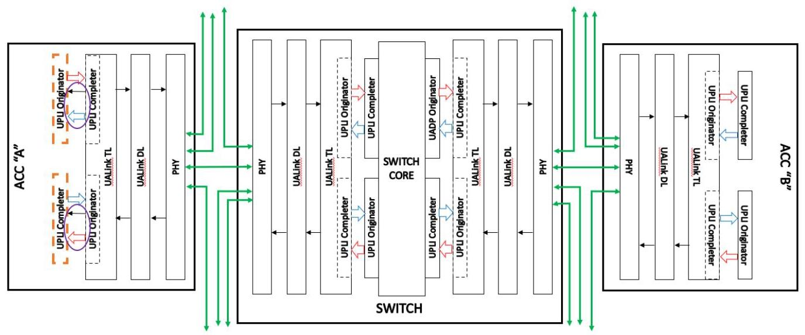
Figure 3-2 UPLI Control Error detected at an Originator or Completer not on a UALink TL on an Accelerators
图3-2 在加速器上非UALink传输层（TL）的始发器或完成器处检测到的UPLI控制错误
In Figure 3-2 above, the processing for a UPLI Control Error detected at a UPLI Originator or UPLI Completer in an Accelerator is shown (errors are detected on both the received Channels and the received Credit Return Interfaces). Processing these Control Errors involves dropping the bad Deat or returned Credit, placing the detecting UPLI Originator or UPLI Completer into Drop Mode for all channels for all ports (implementations can chose to limit Drop Mode to the specific channel with the error), and signaling firmware by an implementation specific means that the error has occurred. Implementations may choose, either through implementation specific hardware means or in the RAS recovery sequence in firmware to place other TLs, Originators, or Completers in this or other Stations into Drop Mode and to possibly take various links into a link down state (up to and including all Stations and links on the Accelerator). It is acceptable to place all links on an Accelerator into a link down state on a Control Error because these links can only communicate with other Accelerators in the same Virtual Pod.
在上面的图 3-2 中，展示了在加速器中 UPLI 发起者或 UPLI 完成者检测到 UPLI 控制错误时的处理过程（错误在接收通道和接收信用返还接口上都会被检测到）。处理这些控制错误涉及丢弃坏的 Deat 或返还的信用，将检测到错误的 UPLI 发起者或 UPLI 完成者针对所有端口的所有通道置于丢弃模式（实现可以选择将丢弃模式限制在发生错误的特定通道），并通过特定于实现的方式通知固件错误已发生。实现可以选择，通过特定于实现的硬件手段或在固件的 RAS 恢复序列中，将本或其他站点中的其他传输层、发起者或完成者置于丢弃模式，并可能将各种链路置于链路断开状态（直至并包括加速器上的所有站点和链路）。在控制错误时，可以将加速器上的所有链路置于链路断开状态，这是可接受的，因为这些链路只能与同一虚拟 Pod 中的其他加速器通信。
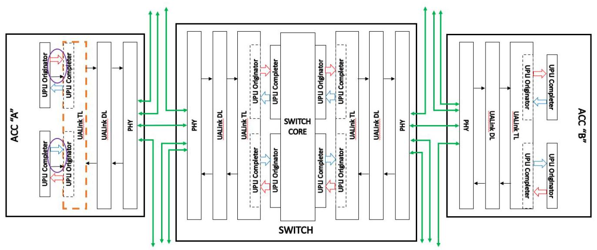
Figure 3-3 UPLI Control Error detected at a UALink TL on an Accelerator
图 3-3 在加速器的 UALink 传输层检测到的 UPLI 控制错误
As shown in Figure 3-3 above, the processing of a UPLI Control Error detected at the UALink TL (either at the Originator or Completer) on an Accelerator involves dropping the bad Beat or returned Credit, placing the TL into Drop Mode for all ports and all Channels on both UPLI interfaces (implementations can choose to apply Drop Mode to only one port) and signaling the firmware by an implementation specific means of the error. Implementations may choose, either through implementation specific hardware means or in the RAS recovery sequence in firmware, to place other TLs, Originators, or Completers in this or other Stations into Drop Mode and to possibly take various links into a link down state (up to and including all Stations and links on the Accelerator). Like Control Errors detected on the Accelerator Completers and Originators, it is acceptable to place all links on the Accelerator into a link down state because these Accelerator links can only communicate with Accelerators in the same Virtual Pod. The TL being in Drop Mode will block Responses to the UPLI Originators in the Accelerators in the Virtual Pod causing them to eventually enter Isolation Mode.
如上图3-3所示，在加速器上的UALink传输层（无论是在发起方还是完成方）检测到UPLI控制错误时，处理过程包括丢弃错误的数据拍或返回的信用，将两个UPLI接口上所有端口和所有通道的传输层置于丢弃模式（实现可以选择仅对一个端口应用丢弃模式），并通过特定于实现的方式向固件发出该错误信号。实现可以选择，无论是通过特定于实现的硬件方式，还是在固件的RAS恢复序列中，将本站点或其他站点中的其他传输层、发起方或完成方置于丢弃模式，并可能将各种链路置于链路断开状态（最多包括加速器上的所有站点和链路）。与在加速器完成方和发起方检测到的控制错误类似，可以将加速器上的所有链路置于链路断开状态，这是可接受的，因为这些加速器链路只能与同一虚拟Pod中的加速器通信。处于丢弃模式的传输层将阻止向虚拟Pod中加速器内的UPLI发起方发送响应，导致这些发起方最终进入隔离模式。
Switch UPLI Control Errors on the Switch UALink Protocol Level Interfaces
交换机 UALink 协议层接口上的 UPLI 控制错误
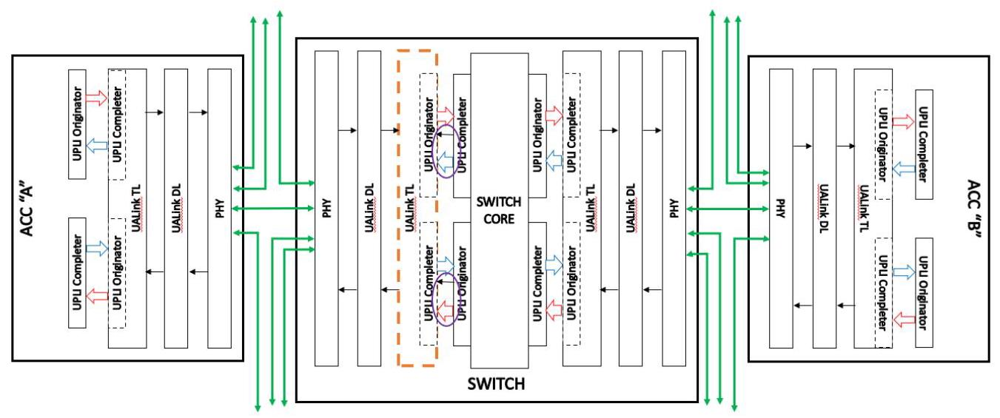
Figure 3-4 UPLI Interface Control Error detected at the UALink TL on the Switch
图3-4 在交换机的UALink TL处检测到的UPLI接口控制错误
As shown in Figure 3-4 above, the processing of a UPLI Control Error detected at the UALink TL (either at the Originator or Completer) on the Switch is the same as processing the same error on the Accelerator: the bad Beat is dropped and the TL detecting the error enters Drop Mode for all channels, on all ports, for both UPLI interfaces (implementations may limit this to a port on both interfaces). Implementations may also, either through implementation specific hardware means or in the RAS recovery sequence in firmware, place other TLs, Originators, or Completers in this or other Stations in the Switch into Drop Mode, and to possibly take various links into a link down state (up to and including all Stations and links on the Switch). This is possible because this is a UPLI Control Error and not a Link Down error. For Link Down errors, only the involved port may be affected. The TL being in Drop Mode will block Responses to the UPLI Originators in the Accelerators in the Virtual Pod causing them to eventually enter Isolation Mode.
如上图3-4所示，在交换机上，于UALink TL（无论位于发起者还是完成者）检测到的UPLI控制错误的处理方式，与在加速器上处理相同错误的方式一致：出错的Beat被丢弃，且检测到错误的TL针对所有通道、所有端口、两个UPLI接口均进入丢弃模式（具体实现可将此限制为两个接口上的一个端口）。实现还可通过特定于实现的硬件手段，或通过固件中的RAS恢复序列，将交换机内此站或其他站中的其他TL、发起者或完成者置于丢弃模式，并可能将多个链路置于链路断开状态（直至并包括交换机上的所有站和链路）。之所以可以这样做，是因为这是UPLI控制错误而非链路断开错误。对于链路断开错误，仅受影响的端口会受到影响。TL处于丢弃模式将阻止向虚拟Pod内加速器中的UPLI发起者发送响应，从而最终导致它们进入隔离模式。
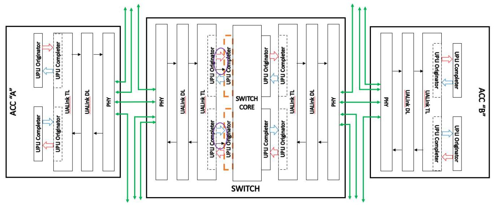
Figure 3-5 UPLI Control Error detected at the UPLI Completer on a Switch
图 3-5 在交换机上的 UPLI Completer 处检测到的 UPLI 控制错误
Figure 3-5 above illustrates the processing for a UPLI Control Error detected at the UPLI Completer or UPLI Originator at the Switch Core (errors are detected on both the received Channels and the received Credit Return Interfaces). The processing involves dropping the bad Beat or returned
图3-5说明了在交换机核心的UPLI完成者或UPLI发起者检测到UPLI控制错误时的处理过程（错误在接收通道和接收信用返回接口上均被检测到）。处理包括丢弃错误的Beat或返回的
Ultra Accelerator Link Consortium Inc. (UALink) - UALink_200 Rev 1.0 Specification
Ultra Accelerator Link Consortium Inc. (UALink) - UALink_200 Rev 1.0 规范
Credit, placing the detecting UPLI Completer or UPLI Originator into Drop Mode for all ports (implementations can choose to limit Drop Mode to the specific channel with the error), and signaling firmware by an implementation specific means that the error has occurred. Implementations may choose, either through implementation specific hardware means or in the RAS recovery sequence in firmware to place other TLs, Originators, or Completers in this or other Stations into Drop Mode and to possibly take various links into a link down state (up to and including all Stations and links on the Switch). It is acceptable to place all links on a Switch into a link down state on a Control Error because the Switch is treated as a single point of failure for these errors.
信用，将检测到错误的UPLI完成器或UPLI发起器置于所有端口的丢弃模式（实现可以选择将丢弃模式限制在发生错误的特定通道），并通过实现特定的方式向固件发出信号，表明错误已发生。实现可以选择通过实现特定的硬件方式或在固件的RAS恢复序列中，将此站点或其他站点中的其他传输层、发起器或完成器置于丢弃模式，并可能将各种链路带入链路断开状态（最多包括交换机上的所有站点和链路）。在控制错误时将交换机上的所有链路置于链路断开状态是可接受的，因为对于这些错误，交换机被视为单点故障。
Switch UPLI Control Errors within the Switch Core
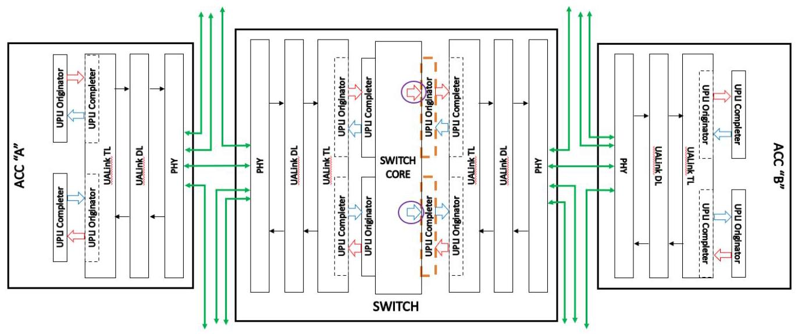
Figure 3-6 UPLI Control Error detected within the Switch Core at the UPLI Originator
Figure 3-6 UPLI发起方处的交换机核心内检测到的UPLI控制错误
As shown in Figure 3-6 above, the processing for a UALink Interface Control Error detected at Switch egress at the UPLI Originator drops the bad Beat, causes the UPLI Originator to enter Drop Mode for at least the channel on which the error was detected, and signals firmware by an implementation specific means.
如上文图 3-6 所示，在 UPLI 发起方的交换机出口处检测到 UALink 接口控制错误的处理流程会丢弃错误的数据拍，导致 UPLI 发起方至少在检测到错误的通道上进入丢弃模式，并通过特定实现的方式通知固件。
3.1.4.3 Link Down Error Processing
The following section describes the sequencing to process a Link Down Error. In UALink, a Link Down Error is intended to be recoverable without resetting the Accelerator or Switch and shall not impact Virtual Pods not utilizing the affected Link.
接下来的章节描述了处理链路断开错误的顺序。在UALink中，链路断开错误旨在无需重置加速器或交换机即可恢复，并且不得影响未使用受影响链路的虚拟Pod。
The various applications running on the Accelerator shall be terminated (as UALink is a load/store architecture, application termination on a Link Down Error is unavoidable), rolled back to a checkpoint, and restarted.
在加速器上运行的各种应用程序应被终止（由于 UALink 是加载/存储架构，在链路断开错误时应用程序终止不可避免），回滚至检查点并重新启动。
The sequencing for a Link Down Error is described below:
链路断开错误的时序说明如下：
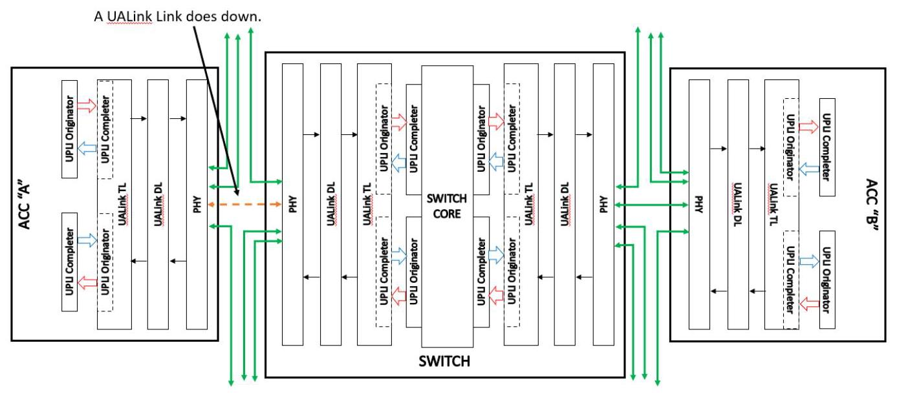
Figure 3-7 UALink Link goes down
图 3-7 UALink 链路断开
As shown in Figure 3-7 above, the process begins with a UALink Link going down.
如图 3-7 所示，该过程始于 UALink 链路中断。
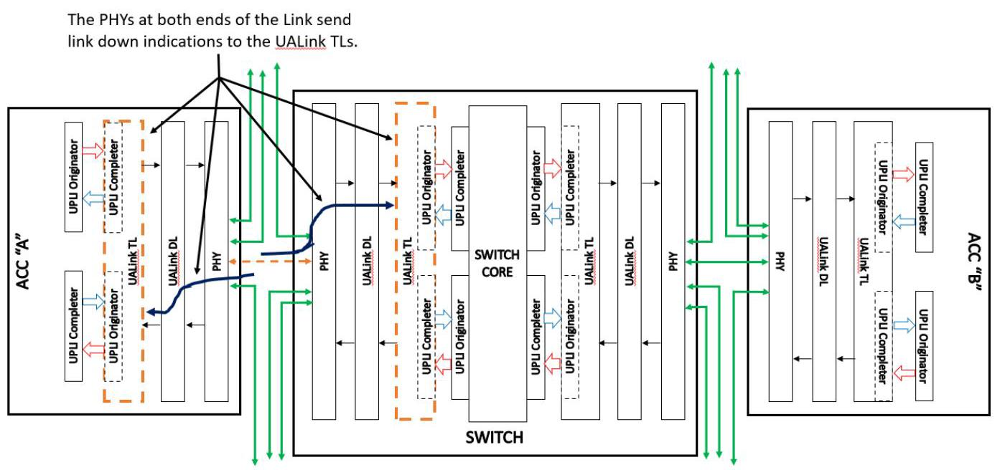
Figure 3-8 PHYs Inform UALink TLs in Accelerator and Switch Which Enter Drop Mode
图 3-8 PHY 通知加速器和交换机中的 UALink TL 进入丢弃模式
As shown in Figure 3-8 above, the PHYs at both ends of the down UALink Link shall determine the link is down and communicate to the two UALink TLs indicating which port has gone into a Link Down state.
如图 3-8 所示，出现故障的 UALink 链路两端的 PHY 应判定链路已断开，并通知两个 UALink TL，指明哪个端口已进入链路断开状态。
The UALink TL in the Accelerator shall go in Drop Mode for all ports. The UPLI Originator will be going into Isolation Mode in the next step, and therefore it is not useful in this case to enter Drop Mode in the UALink TL on the Accelerator only for the port associated with the dropped link.
加速器中的 UALink TL 应当对所有端口进入丢弃模式。UPLI 发起者将在下一步进入隔离模式，因此在这种情况下，仅在加速器的 UALink TL 中为与已断开链路相关联的端口进入丢弃模式并无用处。
On the Switch, however, the UALink TL shall go into Drop Mode only for the affected port. Going into Drop Mode for any other ports could impact Accelerators not in the Virtual Pods which shall not be permitted for a Link Down Error.
然而，在交换机上，UALink TL 应仅对受影响的端口进入 Drop Mode。对其他任何端口进入 Drop Mode 都可能影响到不属于该虚拟 Pod 的加速器，这对于链路断开错误是不允许的。
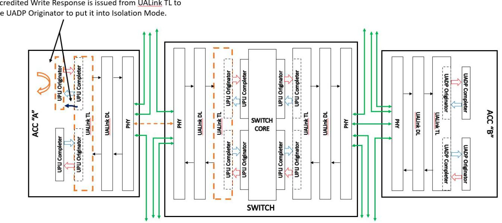
Figure 3-9 Placing the Accelerator UPLI Originator Into Isolation Mode
图 3-9 将加速器 UPLI 发起器置于隔离模式
As shown above in Figure 3-9, the UALink TL shall issue a credited Write Response of "Isolate" to the UPLI Originator which shall cause the UPLI Originator to enter Isolation Mode. This shall prevent the Accelerator from creating new traffic for the dropped link (an all links in the Station).
如上图3-9所示，UALink TL应向UPLI发起者发出一个带有信用的“隔离”写入响应，该响应将使UPLI发起者进入隔离模式。这将防止加速器为已断开的链路（以及站点内的所有链路）创建新流量。
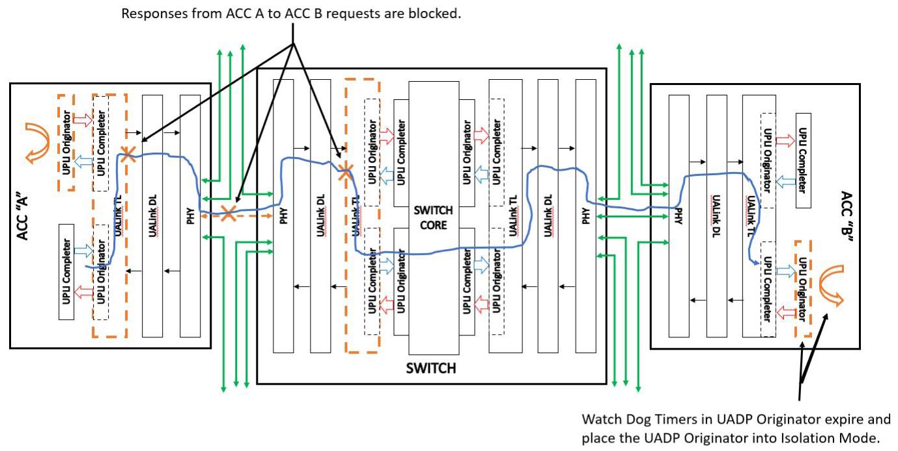
Figure 3-10 Other Accelerators Time Out
图3-10 其他加速器超时
As shown in Figure 3-10 above, once the Accelerator UPLI Originator is in Isolation Mode, the Accelerator UALink TL is in Drop Mode, the link is down, and the UALink TL on the Switch is in Drop Mode for the affected ports, Responses from Accelerator A to Accelerator B's Requests may be blocked. This shall cause the Watch Dog Timers in Accelerator B's UPLI Originator(s) to time out and enter Isolation Mode.
如图 3-10 所示，一旦加速器 UPLI 发起端进入隔离模式，加速器 UALink 传输层即进入丢弃模式，链路断开，且交换机上受影响端口的 UALink 传输层也进入丢弃模式，加速器 A 对加速器 B 请求的响应可能会被阻塞。这将导致加速器 B 的 UPLI 发起端内的看门狗定时器超时并进入隔离模式。
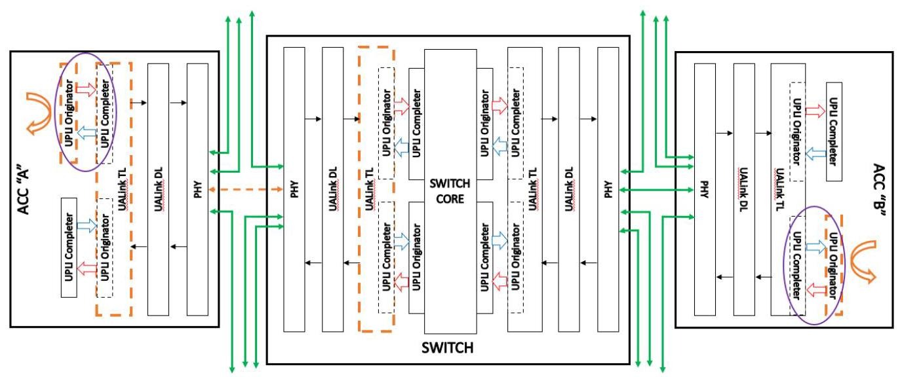
Figure 3-11 Link Down Error Processing Complete
图 3-11 链路断开错误处理完成
The final state of the system for a Link Down Error is shown above in Figure 3-11. The UPLI Originators in both Accelerators shall be in a "safe" state (both in Isolation Mode) and no new traffic shall be generated by these Accelerators (including the other Accelerators in the Virtual Pod, not shown in the figure, that have also timed out). At this point, system management software can gain control of the Accelerators and recover the system, and redispatch applications on the Accelerators. The relevant interfaces for system management software are documented in the separate Ultra Accelerator Link Manageability Specification.
链路断开错误后系统的最终状态如上图3-11所示。两个加速器中的UPLI发起方均应处于“安全”状态（均处于隔离模式），且这些加速器（包括虚拟Pod中未在图中示出的、也已超时的其他加速器）不得产生新的流量。此时，系统管理软件可以获取加速器的控制权并恢复系统，同时在加速器上重新调度应用。系统管理软件的相关接口记载于单独的《Ultra Accelerator Link可管理性规范》中。
4 UPLI Interface Reset, Signaling, and Connection
4.1 UPLI Interface Reset
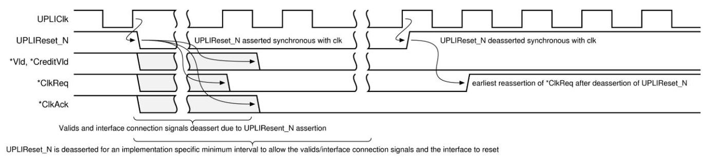
Figure 4-1 UPLI Interface Reset Requirements.
图 4-1 UPLI 接口重置要求。
The system reset signal UPLIReset_N shall be a negative-active signal that shall be used to initialize the interface logic. No state information shall be retained across a reset event (an assertion followed by a de-assertion of UPLIReset_N). Any established Credits shall be reset and any outstanding transactions shall be terminated and shall not receive a Response.
系统复位信号 UPLIReset_N 应为低电平有效信号，用于初始化接口逻辑。在复位事件（UPLIReset_N 先置位再撤销）期间，不得保留任何状态信息。任何已建立的信用量均应复位，任何未完成的事务均应终止且不得收到响应。
The assertion (negative-going edge) of UPLIReset_N and the de-assertion (rising edge) of UPLIReset_N shall be synchronous to the clock: UPLIClk. When the UPLIReset_N signal is first asserted, the Vld, CreditVLD and interface control signals ClkReq and ClkAck signals shall transition to their inactive values in an implementation specific number of cycles which may vary for each signal, but shall be before the UPLIReset_N signal is de-asserted. The UPLIReset_N signal shall remain asserted for an implementation specific minimum interval to allow the interface to reset and the valid signals and interface connection signals to transition to their de-asserted values before UPLIReset_N is de-asserted.
UPLIReset_N 的置位（下降沿）与解置位（上升沿）必须与时钟 UPLIClk 同步。在 UPLIReset_N 信号首次置位时，Vld、CreditVLD 以及接口控制信号 ClkReq 和 ClkAck 应在各自不同的实现特定周期数内（允许各信号不同）转换至其无效值，且该转换必须在 UPLIReset_N 信号解置位之前完成。UPLIReset_N 信号必须保持置位至少一个实现特定的最小时间间隔，以确保接口完成复位，并使有效信号和接口连接信号在其解置位之前均达到解置位状态。
Any attempt to reconnect the interface by asserting either of the *ClkReq signals (described below) shall not occur until at least one cycle after the de-assertion of UPLIReset_N signal as shown in Figure 4-1 UPLI Interface Reset Requirements.
任何通过置位任一*ClkReq信号（下文中将描述）来重新连接接口的尝试，均须在UPLIReset_N信号撤销置位后至少等待一个周期，如图4-1“UPLI接口复位要求”所示。
4.2 UPLI Interface Signaling Requirements
When the Source Originator or Completer has not asserted its Vld signal for a given channel, all of the command and data information on that channel is not valid and shall be ignored. For example, there is no requirement that ReqCmd has a valid encoding when ReqVld is de-asserted or that the parity signals on the OrigData or RdRsp Channels are consistent with the data on those channels when OrigDatVld or RdRspVld, respectively, is de-asserted. The validity of the CreditVld signals and associated Credit management signals (driven from the receiver Completer or Originator side of the UPLI interface) shall not be impacted by the *Vld signal.
当源发起方或完成方未针对给定通道置位其 Vld 信号时，该通道上的所有命令和数据信息均无效，应忽略。例如，不要求当 ReqVld 取消置位时 ReqCmd 具有有效编码，也不要求当 OrigDatVld 或 RdRspVld 分别取消置位时 OrigData 或 RdRsp 通道上的奇偶校验信号与这些通道上的数据保持一致。CreditVld 信号及相关的 Credit 管理信号（从 UPLI 接口的接收方完成方或发起方一侧驱动）的有效性不应受 *Vld 信号影响。
All signals on the UPLI interface shall be synchronous to a common clock (UPLIClk) supplied by system pervasive logic. Source logic switching and signal propagation times shall be expected to be such that there is sufficient time margin to the next rising clock edge to allow simple combinatorial logic on the receiving side of the interface.
UPLI接口上的所有信号均应与系统广泛逻辑提供的公共时钟（UPLIClk）同步。源逻辑切换和信号传播时间应确保在下一个时钟上升沿到来前留有足够的时间裕量，以便接口接收侧能采用简单的组合逻辑。
4.3 UPLI Interface Control
A UALink Protocol Level Interface shall provide signals that allow the interface to be connected (brought into an active state), either at power up or after a reset of the interface, in an ordered sequence (the Connection Handshake Protocol) that eliminates race conditions that might corrupt the transfer of information across the interface. The Connection Handshake Protocol may be orchestrated by state machines on both sides of the interface or coordinated directly by SOC-level logic and/or management firmware. Both the Originator and Completer shall be powered and actively clocked for the Connection Handshake Protocol to proceed.
UALink 协议层接口应提供相应信号，使接口能够在有序序列（连接握手协议）中建立连接（进入活动状态）——无论在上电后还是接口复位后——以消除可能导致接口信息传输损坏的竞争条件。连接握手协议可由接口两侧的状态机协调执行，或由片上系统级逻辑和/或管理固件直接协调。发起者与完成者均须处于通电状态并具备有效时钟，连接握手协议方可继续进行。
In the following diagrams and discussion, "Originator" shall refer to the Originator for the UALink Protocol Level Interface and "Completer" shall refer to the Completer for the UALink Protocol Level Interface. The interface control signals used in the Connection Handshake Protocol shall be the OrigClkReq, OrigClkAck, CompClkReq, and CompClkAck signals.
在以下示意图和讨论中，“发起端”指 UALink 协议层接口的发起端，“完成端”指 UALink 协议层接口的完成端。连接握手协议所使用的接口控制信号为 OrigClkReq、OrigClkAck、CompClkReq 和 CompClkAck 信号。
An Originator shall use the OrigClkReq signal to request the connection of the Originator to Completer Channels and Credit Return Interfaces (the Request Channel, Originator Data Channel, Read Response/Data Credit Return Interface, and Write Response Credit Return Interface). The Completer shall respond with the CompClkAck signal to acknowledge the Originator's request and indicate the Completer's ability to accept information on those Channels and Credit Return Interfaces. Once the Originator is connected to the Completer, the Originator may transfer Credits to the Completer, but the Completer shall not send Beats to the Originator until the Completer to Originator connection is also completed. Finally, the Originator shall not send Beats to the Completer until the Originator has Credits to do so. The Completer to Originator connection sha completed before the Credits from the Completer can be transferred to the Originator.
发起方应使用 OrigClkReq 信号来请求将发起方连接到完成方通道和信用返回接口（请求通道、发起方数据通道、读响应/数据信用返回接口以及写响应信用返回接口）。完成方应通过 CompClkAck 信号进行响应，以确认发起方的请求并表明完成方有能力在这些通道和信用返回接口上接收信息。一旦发起方连接到完成方，发起方即可将信用传输给完成方，但完成方不得向发起方发送拍，直到完成方到发起方的连接也已完成。最后，在发起方拥有足够的信用之前，发起方不得向完成方发送拍。完成方到发起方的连接应在完成方的信用可以传输到发起方之前完成。
The Completer shall use the CompClkReq signal to request the connection of the Completer to Originator Channels and Credit Return Interfaces (the Read Response/Data Channel, Write Response Channel, Request Credit Return Interface, Originator Data Credit Return Interface). The Originator shall respond with the OrigClkAck signal to acknowledge the Completer's request and indicate the Originator's ability to accept information on those Channels and Credit Return Interfaces. Once the Completer is connected to the Originator, the Completer may transfer Credits to the Originator, but the Originator may not send Beats to the Completer until the Originator to Completer connection is also completed. Finally, the Completer shall not send Beats to the Originator until the Completer has Credits to do so. The Originator to Completer connection shall be completed before the Credits from the Originator can be transferred to the Completer.
完成方应使用 CompClkReq 信号请求将完成方连接到发起方通道和信用返回接口（读取响应/数据通道、写入响应通道、请求信用返回接口、发起方数据信用返回接口）。发起方应使用 OrigClkAck 信号进行响应，以确认完成方的请求，并表明发起方有能力在这些通道和信用返回接口上接收信息。一旦完成方连接到发起方，完成方可以向发起方传输信用，但发起方不得向完成方发送数据拍，直到发起方到完成方的连接也已完成。最后，完成方在获得信用之前，不得向发起方发送数据拍。发起方到完成方的连接应在发起方的信用可以传输到完成方之前完成。
In order to transfer Beats, the Originator shall be connected to the Completer and the Completer shall be connected to the Originator (and appropriate Credits transferred) implying all four interface control signals: ClkReq and ClkAck shall be asserted before Beats can be transferred across the interface.
为了传输拍（Beats），发起端必须连接到完成端，完成端也必须连接到发起端（并传输适当的信用量），这意味着所有四个接口控制信号：ClkReq 和 ClkAck 必须在拍能够跨越接口传输之前被置为有效。
Either the Completer or the Originator may hold off the completion of the connection by delaying its ClkAck response or deferring its assertion of ClkReq. Prior to asserting ClkAck the acknowledging Completer or Originator shall be prepared to latch valid information presented by the requesting agent on any of the requesting agent's outbound channels. Once an Originator or Completer asserts any of ClkReq or *ClkAck, it shall not de-assert that signal until UPLIReset_N is asserted. The Completer may wait for the Originator to establish the connection first, or both sides may independently connect. It shall not be legal for the Originator to wait for a Completer to establish the connection first.
完成方或发起方均可通过延迟其 ClkAck 响应或推迟 ClkReq 的有效来阻止连接完成。在有效 ClkAck 之前，进行确认的完成方或发起方应准备好锁存在请求方任何输出通道上由请求方提供的有效信息。一旦发起方或完成方有效 ClkReq 或 *ClkAck 中的任一信号，在 UPLIReset_N 有效之前不得撤销该信号。完成方可等待发起方首先建立连接，或者双方也可独立进行连接。发起方等待完成方首先建立连接是不合规的。
Ultra Accelerator Link Consortium Inc. (UALink) - UALink_200 Rev 1.0 Specification
超加速器链路联盟公司（Ultra Accelerator Link Consortium Inc.，简称UALink） - UALink_200 修订版 1.0 规范
The following figures show the UPLI Connection Handshake Protocol with the Originator connecting first (Figure 4-2), the Completer connecting first (Figure 4-3), and finally, both Originator and Completer connecting concurrently (Figure 4-4).
下面的图展示了 UPLI 连接握手协议，其中发起方首先连接（图 4-2），完成方首先连接（图 4-3），最后，发起方和完成方同时连接（图 4-4）。
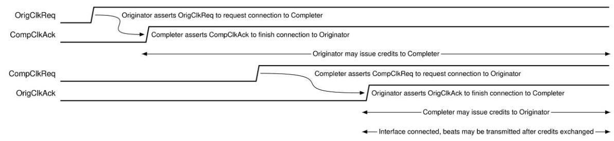
Figure 4-2 UPLI Connection Handshake Protocol - Originator connects first
图4-2 UPLI连接握手协议 - 发起者先连接
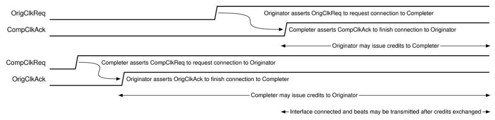
Figure 4-3 UPLI Connection Handshake Protocol - Completer connects first
图4-3 UPLI连接握手协议 - 完成者先连接
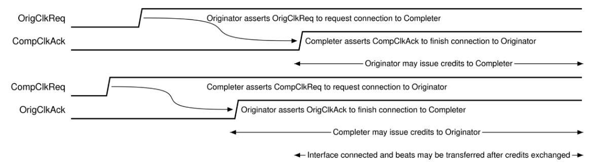
Figure 4-4 UPLI Connection Handshake Protocol - Originator and Completer connecting concurrently
图 4-4 UPLI 连接握手协议 - 发起方和完成方同时连接